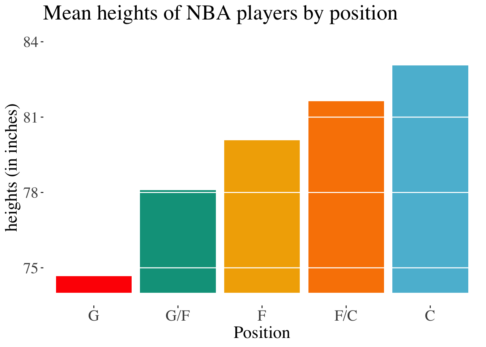
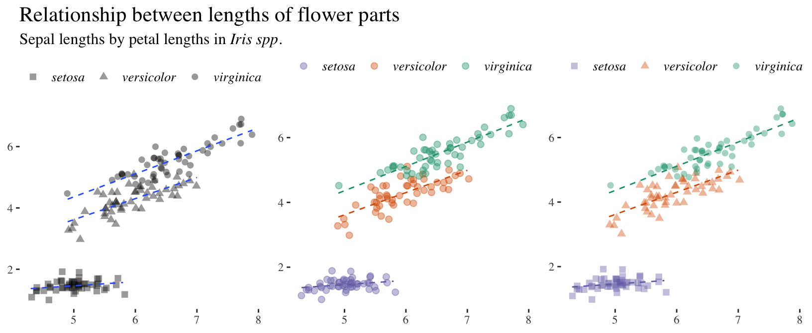
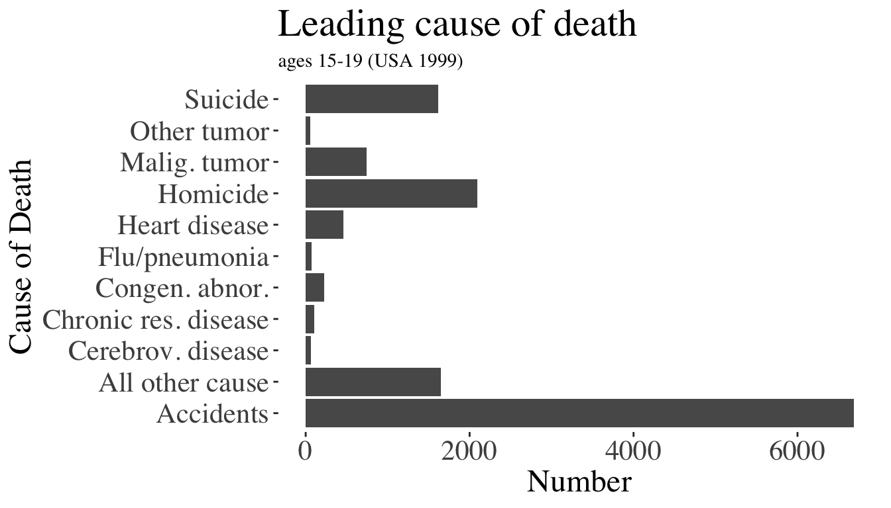

Warning: Using `size` aesthetic for lines was deprecated in ggplot2 3.4.0.
ℹ Please use `linewidth` instead.Ch 2. Displaying Data
Key Learning Goals
Distinguish between explanatory and exploratory figures
Identify what makes a good graph.
Understand how data types drive figure design.
How to make effective tables.
Identify best practices in figure design.
Displaying Data
Is so very very important
Can help you understand your data
Can help you make clear points to others
Always a good starting place
Exploratory vs Explanatory Plots: Goals
In exploratory data analysis, you aim to find the story of the data.
In explanatory data analysis, you aim to share the story of the data.
Note: there is a continuum between explanatory and exploratory plots. For example: the plot you show your lab is probably somewhere in between what you make for yourself and what you send to the New York Times.
Exploratory vs Explanatory Plots: Focus
For exploratory plots: Don’t fuss about colors, label size, names etc. If you see the story you’re good!
For explanatory plots: Fuss about all the things above. Facilitate understanding of audience (eg people unfamiliar with your data, or don’t print in color, or are colorblind, etc).
The suggestions below will help the story of the data reveal itself, and is therefore useful for exploratory & explanatory plots.
Data Visualizartion Example: Anscombe’s quartet
Anscombe’s quartet: Data Summary
Four data sets with identical summary statistics.
| group | mean.x | mean.y | sd.x | sd.y | cor.xy |
|---|---|---|---|---|---|
| A | 9 | 7.5 | 3.32 | 2.03 | 0.82 |
| B | 9 | 7.5 | 3.32 | 2.03 | 0.82 |
| C | 9 | 7.5 | 3.32 | 2.03 | 0.82 |
| D | 9 | 7.5 | 3.32 | 2.03 | 0.82 |
Anscombe’s quartet: Trendlines
Trendlines do not reveal differences in the data sets.
`geom_smooth()` using formula = 'y ~ x'Anscombe’s Quartet: Data
Showing the data reveals serious differences in the data sets.
`geom_smooth()` using formula = 'y ~ x'Rules of Data Visualization
How to Make A Good Plot
1. Show the data
2. Make patterns easy to see
3. Represent magnitudes honestly
(this goes for all aspects of the data)
4. Draw graphical elements clearly
Mistakes
Mistake 1: Hiding the data
How to hide data:
- Provide only stat summaries.
- Overplot.
How to reveal data:
- Present all of the data points.
- While allowing all to be seen.
👠Not showing data 👠just a summary
👠Not showing data 👠overploting
👠Show the data 👠Sinaplots
👠Show the data 👠Jittering
Mistake 2: Making patterns hard to see
How to hide patterns:
- Make one plot and call it good.
- Unreasonable scales.
- Arrange factors nonsensically.
How to reveal patterns:
- Explore multiple potential plots.
- Appropriate scales.
- Arrange factors meaningfully (in order for ordinal, by mean for nominal).
👠Nonsensical order hides patterns ğŸ‘
Here, the non-intuitive ordering of factors hides the pattern.
👠Bad axis limits hide patterns ğŸ‘
Here the large scale hides the pattern
👠Transform data to reveal patterns ğŸ‘
Relationship between body size and lifespan in mammals, data from Allison & Cicchetti 1976
Mistake 3: Dishonest magnitudes
How to represent magnitudes dishonestly:
- Start bar plots at a non-zero value
How to represent magnitudes honestly:
- Start bar plots at zero
Why? The weight of a barplot makes us think in magnitudes.
👠Present magnitude dishonestly [1/2]
The plot suggests that centers are 20X taller than guards.

👠Present magnitude dishonestly [2/2]
Mistake 4: Draw elements unclearly
How to draw graphical elements unclearly:
Unthinkingly accept default options from plotting programs.
Do not consider how a diverse audience will consume your figure.
How to draw graphical elements clearly:
Reflect on plot design.
Consider the diverse audience you are reaching and how they may interact with your plot.
👠Draw graphics UNclearly ğŸ‘
👠Clear graphics 👠Flip coordinates
👠Clear graphics 👠for everyone
Consider colorblind readers
Warning: A numeric `legend.position` argument in `theme()` was deprecated in ggplot2
3.5.0.
ℹ Please use the `legend.position.inside` argument of `theme()` instead.👠Clear graphics 👠Direct labelling.
Which of these is easier to interpret?
`geom_smooth()` using formula = 'y ~ x'
`geom_smooth()` using formula = 'y ~ x'👠Clear graphics 👠Redundant coding.
Which of these is easier to interpret?
`geom_smooth()` using formula = 'y ~ x'
`geom_smooth()` using formula = 'y ~ x'
`geom_smooth()` using formula = 'y ~ x'
Consider data type!
Plots often follow from data structure
Categorical variables
Barplots &
Tables
Nonesensical ordering hides patterns
Order ordinal factors meaningfully
- For example from January to December.
Order nominal factors by count.
- If there is a grab bag category, place it after the lowest count.
Ordering factors nonsensically
👠Before re-ordering factors 👠👠After re-ordering factors ğŸ‘

Ordering factors meaningfully
👠After re-ordering factors ğŸ‘

Tables should follow similar rules
👠Ordered nonsensically ğŸ‘
| Number | Cause_of_death | |
|---|---|---|
| 1 | 6688 | Accidents |
| 11 | 1653 | All other cause |
| 9 | 67 | Cerebrov. disease |
| 7 | 107 | Chronic res. disease |
| 6 | 222 | Congen. abnor. |
| 8 | 73 | Flu/pneumonia |
| 5 | 463 | Heart disease |
| 2 | 2093 | Homicide |
| 4 | 745 | Malig. tumor |
| 10 | 52 | Other tumor |
| 3 | 1615 | Suicide |
Tables should follow similar rules
👠Ordered to show patterns ğŸ‘
| Number | Cause_of_death |
|---|---|
| 6688 | Accidents |
| 2093 | Homicide |
| 1615 | Suicide |
| 745 | Malig. tumor |
| 463 | Heart disease |
| 222 | Congen. abnor. |
| 107 | Chronic res. disease |
| 73 | Flu/pneumonia |
| 67 | Cerebrov. disease |
| 52 | Other tumor |
| 1653 | All other cause |
One numerical variable.
Example: Words in Gettysburg address
Histograms
Density Plots &
Cumulative Frequency Distributions
One numerical variable - Goals.
Visualize the center (mean)
Visualize the width (variation)
Visualize the shape (distribution)
Raw data
| all.words | word.lengths | speech |
|---|---|---|
| Four | 4 | noun |
| score | 5 | noun |
| and | 3 | conjunction |
| seven | 5 | noun |
| years | 5 | noun |
| ago | 3 | adverb |
| our | 3 | pronoun |
| fathers | 7 | noun |
| brought | 7 | verb |
| forth | 5 | adverb |
| on | 2 | preposition |
| this | 4 | pronoun |
| continent | 9 | noun |
| a | 1 | article |
| new | 3 | adjective |
| nation | 6 | noun |
| conceived | 9 | verb |
| in | 2 | preposition |
| Liberty | 7 | noun |
| and | 3 | conjunction |
| dedicated | 9 | adjective |
| to | 2 | preposition |
| the | 3 | article |
| proposition | 11 | noun |
| that | 4 | adjective |
| all | 3 | adjective |
| men | 3 | noun |
| are | 3 | verb |
| created | 7 | verb |
| equal | 5 | adjective |
| Now | 3 | conjunction |
| we | 2 | pronoun |
| are | 3 | verb |
| engaged | 7 | adjective |
| in | 2 | preposition |
| a | 1 | article |
| great | 5 | adjective |
| civil | 5 | adjective |
| war | 3 | noun |
| testing | 7 | verb |
| whether | 7 | conjunction |
| that | 4 | pronoun |
| nation | 6 | noun |
| or | 2 | conjunction |
| any | 3 | adjective |
| nation | 6 | noun |
| so | 2 | adverb |
| conceived | 9 | verb |
| and | 3 | article |
| so | 2 | adverb |
| dedicated | 9 | verb |
| can | 3 | verb |
| long | 4 | adjective |
| endure | 6 | verb |
| We | 2 | pronoun |
| are | 3 | verb |
| met | 3 | verb |
| on | 2 | preposition |
| a | 1 | article |
| great | 5 | adjective |
| battlefield | 11 | noun |
| of | 2 | preposition |
| that | 4 | pronoun |
| war | 3 | noun |
| We | 2 | pronoun |
| have | 4 | verb |
| come | 4 | verb |
| to | 2 | preposition |
| dedicate | 8 | verb |
| a | 1 | article |
| portion | 7 | noun |
| of | 2 | preposition |
| that | 4 | pronoun |
| field | 5 | noun |
| as | 2 | conjunction |
| a | 1 | article |
| final | 5 | adjective |
| resting | 7 | adjective |
| place | 5 | noun |
| for | 3 | preposition |
| those | 5 | pronoun |
| who | 3 | pronoun |
| here | 4 | noun |
| gave | 4 | verb |
| their | 5 | pronoun |
| lives | 5 | noun |
| that | 4 | pronoun |
| that | 4 | pronoun |
| nation | 6 | noun |
| might | 5 | verb |
| live | 4 | verb |
| It | 2 | pronoun |
| is | 2 | verb |
| altogether | 10 | adverb |
| fitting | 7 | verb |
| and | 3 | conjunction |
| proper | 6 | noun |
| that | 4 | pronoun |
| we | 2 | pronoun |
| should | 6 | verb |
| do | 2 | verb |
| this | 4 | pronoun |
| But | 3 | conjunction |
| in | 2 | preposition |
| a | 1 | article |
| larger | 6 | verb |
| sense | 5 | noun |
| we | 2 | pronoun |
| can | 3 | verb |
| not | 3 | adverb |
| dedicate | 8 | verb |
| we | 2 | pronoun |
| can | 3 | verb |
| not | 3 | adverb |
| consecrate | 10 | verb |
| we | 2 | pronoun |
| can | 3 | verb |
| not | 3 | adverb |
| hallow | 6 | verb |
| this | 4 | pronoun |
| ground | 6 | noun |
| The | 3 | article |
| brave | 5 | adjective |
| men | 3 | noun |
| living | 6 | adjective |
| and | 3 | conjunction |
| dead | 4 | adjective |
| who | 3 | pronoun |
| struggled | 9 | verb |
| here | 4 | noun |
| have | 4 | adverb |
| consecrated | 11 | verb |
| it | 2 | pronoun |
| far | 3 | adjective |
| above | 5 | adverb |
| our | 3 | pronoun |
| poor | 4 | adjective |
| power | 5 | noun |
| to | 2 | infinitive |
| add | 3 | verb |
| or | 2 | conjunction |
| detract | 7 | verb |
| The | 3 | article |
| world | 5 | noun |
| will | 4 | verb |
| little | 6 | adjective |
| note | 4 | verb |
| nor | 3 | conjunction |
| long | 4 | adjective |
| remember | 8 | verb |
| what | 4 | noun |
| we | 2 | pronoun |
| say | 3 | verb |
| here | 4 | adverb |
| but | 3 | conjunction |
| it | 2 | pronoun |
| can | 3 | verb |
| never | 5 | adverb |
| forget | 6 | verb |
| what | 4 | noun |
| they | 4 | pronoun |
| did | 3 | verb |
| here | 4 | adverb |
| It | 2 | pronoun |
| is | 2 | verb |
| for | 3 | preposition |
| us | 2 | pronoun |
| the | 3 | article |
| living | 6 | noun |
| rather | 6 | adverb |
| to | 2 | adverb |
| be | 2 | noun |
| dedicated | 9 | adjective |
| here | 4 | adverb |
| to | 2 | preposition |
| the | 3 | article |
| unfinished | 10 | adjective |
| work | 4 | noun |
| which | 5 | pronoun |
| they | 4 | pronoun |
| who | 3 | pronoun |
| fought | 6 | verb |
| here | 4 | adverb |
| have | 4 | verb |
| thus | 4 | adverb |
| far | 3 | noun |
| so | 2 | adverb |
| nobly | 5 | adverb |
| advanced | 8 | verb |
| It | 2 | pronoun |
| is | 2 | verb |
| rather | 6 | adverb |
| for | 3 | preposition |
| us | 2 | pronoun |
| to | 2 | adverb |
| be | 2 | verb |
| here | 4 | noun |
| dedicated | 9 | adjective |
| to | 2 | preposition |
| the | 3 | article |
| great | 5 | adjective |
| task | 4 | noun |
| remaining | 9 | adjective |
| before | 6 | preposition |
| us | 2 | pronoun |
| that | 4 | pronoun |
| from | 4 | preposition |
| these | 5 | adjective |
| honored | 7 | adjective |
| dead | 4 | noun |
| we | 2 | pronoun |
| take | 4 | verb |
| increased | 9 | noun |
| devotion | 8 | noun |
| to | 2 | preposition |
| that | 4 | pronoun |
| cause | 5 | noun |
| for | 3 | preposition |
| which | 5 | adjective |
| they | 4 | pronoun |
| gave | 4 | verb |
| the | 3 | article |
| last | 4 | adjective |
| full | 4 | adjective |
| measure | 7 | noun |
| of | 2 | preposition |
| devotion | 8 | noun |
| that | 4 | pronoun |
| we | 2 | pronoun |
| here | 4 | noun |
| highly | 6 | adverb |
| resolve | 7 | verb |
| that | 4 | pronoun |
| these | 5 | adjective |
| dead | 4 | noun |
| shall | 5 | verb |
| not | 3 | adverb |
| have | 4 | verb |
| died | 4 | verb |
| in | 2 | preposition |
| vain | 4 | adjective |
| that | 4 | pronoun |
| this | 4 | pronoun |
| nation | 6 | noun |
| under | 5 | preposition |
| God | 3 | noun |
| shall | 5 | verb |
| have | 4 | verb |
| a | 1 | noun |
| new | 3 | adjective |
| birth | 5 | verb |
| of | 2 | preposition |
| freedom | 7 | noun |
| and | 3 | conjunction |
| that | 4 | pronoun |
| government | 10 | noun |
| of | 2 | preposition |
| the | 3 | article |
| people | 6 | noun |
| by | 2 | preposition |
| the | 3 | article |
| people | 6 | noun |
| for | 3 | preposition |
| the | 3 | article |
| people | 6 | noun |
| shall | 5 | verb |
| not | 3 | adverb |
| perish | 6 | verb |
| from | 4 | preposition |
| the | 3 | article |
| earth | 5 | noun |
Summary tables
# of words of length word.lengths in the Gettysburg address
| word.lengths | count |
|---|---|
| 1 | 7 |
| 2 | 50 |
| 3 | 60 |
| 4 | 58 |
| 5 | 34 |
| 6 | 24 |
| 7 | 15 |
| 8 | 6 |
| 9 | 10 |
| 10 | 4 |
| 11 | 3 |
Histograms
Histograms provide a visual description of these patterns
Histograms. Consider yout bins
Changing bins can change stories
- Don’t be fooled. Don’t allow binwidth to obscure your data
Never use defaults (w.o thinking)
Density plots
Density plots serve a similar purpose as histograms, but smooth the distribution.
Like histograms (even more so), we can be fooled by bandwidth. take control of this
Cumulative Frequency Distributions
Cumulative Frequency Distributions Provide a visualization that clearly communicates quantiles.
Shapes of distributions
Histograms, density plots, & cumulative frequency plots can
Reveal The Shapes of distributions
This is important for understanding data and choosing stats
Distribution shapes: Histrograms.
Distribution shapes: Density Plots.
Distribution shapes: Cumulative Frequency Distributions
Scale for x is already present.
Adding another scale for x, which will replace the existing scale.Two categorical variables. Example: Is breeding dangerous for birds?
Bar Plots (Grouped, Stacked, or Filled) &
Contingency Tables &
Mosaic Plots
Two categorical variables - Goals
Visualize the association between variables
Is breeding dangerous for birds?

A bird with malaria. Iimage from
Literak et al. 2010
To find out, Oppliger et al (1996), removed eggs from some, and not other, Parus major to encourage them to breed more.
They later assayed moms for malaria. Here are the data as a contingency table
| outcome | control | removed | total |
|---|---|---|---|
| malaria | 7 | 15 | 22 |
| no_malaria | 28 | 15 | 43 |
| total | 35 | 30 | 65 |
Visualization: A grouped bar graph
Visualization: A stacked bar graph
Bar graphs: Stacked v grouped
Which do we like better?
The appropriate graph depends on the question
Visualization: Mosaic plot
Warning: Vectorized input to `element_text()` is not officially supported.
ℹ Results may be unexpected or may change in future versions of ggplot2.Warning: The `scale_name` argument of `continuous_scale()` is deprecated as of ggplot2
3.5.0.Warning: The `trans` argument of `continuous_scale()` is deprecated as of ggplot2 3.5.0.
ℹ Please use the `transform` argument instead.Warning: `unite_()` was deprecated in tidyr 1.2.0.
ℹ Please use `unite()` instead.
ℹ The deprecated feature was likely used in the ggmosaic package.
Please report the issue at <https://github.com/haleyjeppson/ggmosaic>.Associations between categorical and numerical variables. Example: Iris flowers.
Multiple Hitograms or Joyplots &
Stripcharts, Sinaplots or Boxplots
DATA: Edgar Andersons’ Iris dataset

Multiple Histograms
Ridegeline plots
A bad visualization.
Be sure to avoid overplotting
Better option: Strip chart
Better option: Sina plot
Better option: Violin Plot
Better option: Violin + Sinaplot
Better option: Boxplot
Boxplot refresher
Largest non extreme
Q3: Upper Quartile
Q2: Median
Q1: Lower Quartile
Smallest non extreme
Dots denote extreme points
Better option: Boxplot + Jitter
Associations between two numerical variables & beyond. Example: Iris data
Scatterplots
Two numerical variables - Goals
Visualize the association
Visualize the joint distribution
Scatterplots
`geom_smooth()` using formula = 'y ~ x'Two continuous, One categorical [1/3]
Try “small muliples”
`geom_smooth()` using formula = 'y ~ x'Two continuous, One categorical [2/3]
Try scatterplots with legends.
`geom_smooth()` using formula = 'y ~ x'Two continuous, One categorical [3/3]
Try scatterplots with direct labeling.
`geom_smooth()` using formula = 'y ~ x'